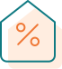

Строим дома с полной отделкой и коммуникациями
Вы получаете готовый дом где будет предусмотрено все для комфортного проживанияПредоставляем гарантию на все виды работ
На строительство домов -5 лет, на инженерные коммуникации -1 годКачество работ по утеплению проверяем тепловизором
Приступаем к отделочным работам только после проверки укладки утеплителя и ветрозащиты Работаем с ипотекой и различными сертификатами
Являемся аккредитованными подрядчиками для получения сельской ипотекиПостгрантийное обслуживание
Заказать постгарантийное обслуживание можно независимо от того, в каком году был сдан дом.